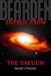

| The Tom Bearden Website
|
 |
Energy from the Vacuum
Reviews from readers
"By all rights, this book should change history and possibly save the
planet"
This from the young graduate Engineer who purchased the very first copy: "It's really making my brain itch, in a good way. Like when a wound is healing and that new skin is so itchy. The first thing I have realized is the inadequacy of the so called technical education I received. I got a BS in Mechanical Engineering from UC** which included a couple of years of Physics and several years of math up to diff. eqs. Most people would think that that would have exposed me to the latest and greatest as far as scientific knowledge is concerned. After reading as far as I have in Bearden's book, I realize how far from accurate that is. The engineering physics was mostly based on Newtonian and Maxwellian concepts. I learned NOTHING that wasn't less than 100 years old......"This from a 20 year VP of Technology for a well-known company in the Electrical Engineering sector. "I look forward to receiving your book, since I
believe that you are perhaps the best technical writer that I have
encountered. Also, your subject cannot be more important........ From Jon N
Got your book
and have been devouring it for the last few days. What can I say?
Seminal, life-changing, history-making; all those things fail to
describe it adequately. The book is incredible. I am in awe. The last
book that struck me so deeply was Jane Roberts' Nature of Personal
Reality almost 30 years ago. I have dreamed of these kinds of technology
for decades, knowing somewhere deep inside that they could exist. Even
if I do not live to see the world transformed, I am now satisfied that
those dreams were not fantasy. The possibility is real and within our
grasp now.
My copy of Dr. Bearden's new book, Energy from The Vacuum, has just arrived in the mail. It's about 2-inches thick, softcover. From quickly scanning through it, I can say that "comprehensive" is an adjective that does not fully describe just how good this book is. It covers many inter-related topics that will make for stimulating reading on one's weekends. I highly recommend it to one and all. The price is not exactly "cheap," but, based on size and weight, it is reasonably priced as compared to comparable scientific books published today. Only $95.00, which includes sales tax, shipping and handling.
Alexander Labounsky
Associate Technical Fellow
The Boeing Company - Long Beach
I also received a copy of the book and it is an impressive volume. Dr. Myron Evans Review from "Frontier Perspectives" by Hal Fox - The Center for Frontier Sciences at Temple University I have just finished reading Dr. Bearden's "Energy from the Vacuum: Concepts & Principles". I am currently working on an BS/EE degree and Dr. Bearden has opened my eyes concerning charges and dipoles. I would very much like to thank Dr. Bearden and let him know that he has inspired me to discovery more about the vacuum and its infinite supply of free energy. |